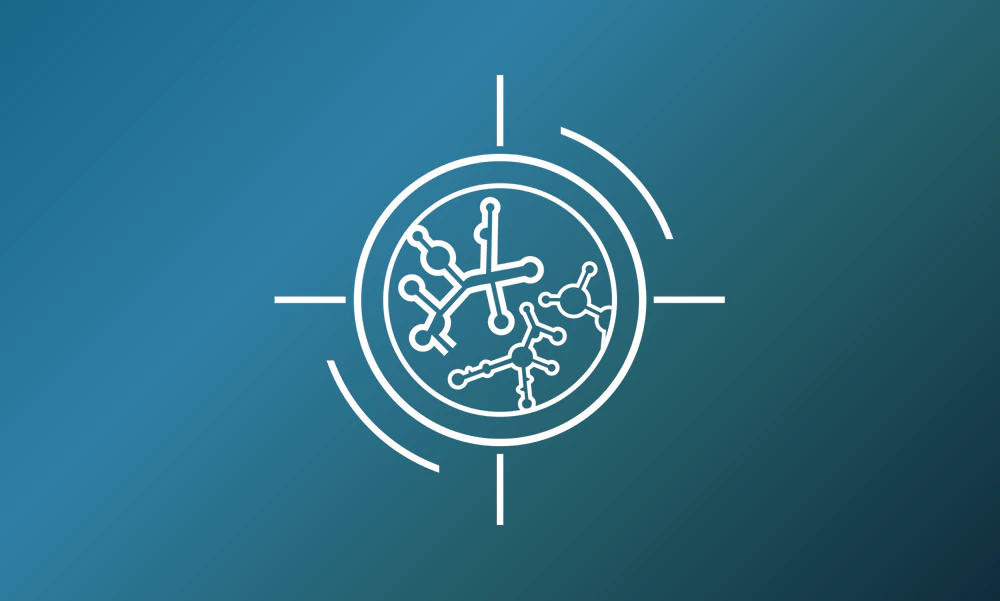
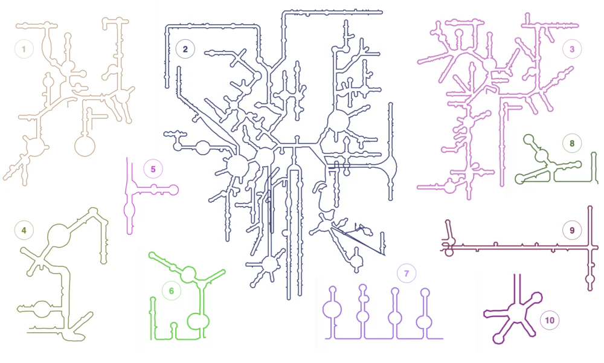
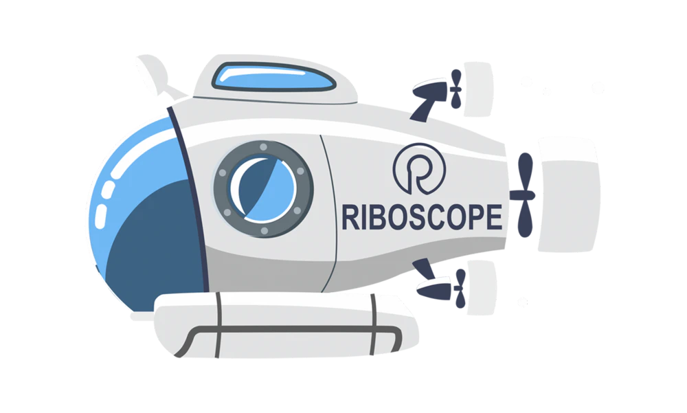
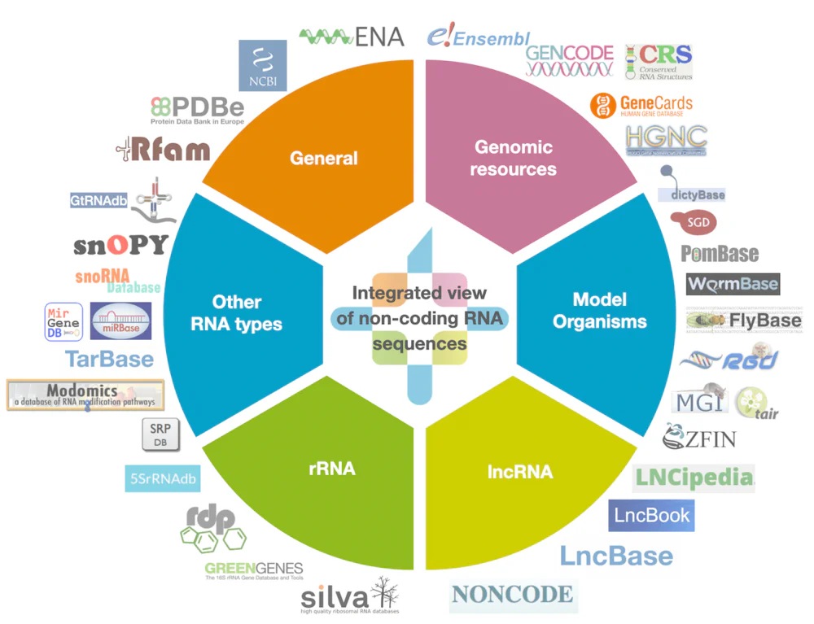
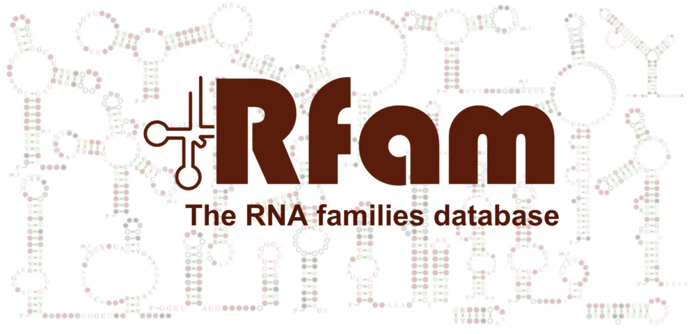
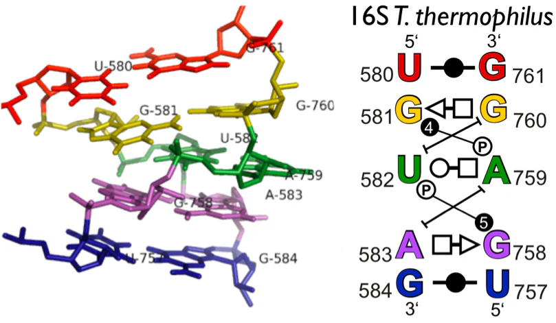

RNera Bio
I’m the co-founder and CEO of RNera Bio, a biotech startup established in 2026. Stay tuned!
For over 15 years, I’ve worked across RNA research, bioinformatics, and software development, building tools that support the global RNA community. During my PhD in the Leontis-Zirbel lab at Bowling Green State University, I developed the RNA 3D Motif Atlas, an automated classification system for RNA 3D motifs, and contributed to several tools and databases for RNA 3D structure analysis, including RNA 3D Hub, WebFR3D, JAR3D, and R3D Align.
Following my PhD, I joined the European Bioinformatics Institute (EMBL-EBI), where I served as a Bioinformatician and later as a Project Leader. There, I established RNAcentral and led the team behind Rfam. I also created R2DT, the first method for automatic visualisation of RNA secondary structure in consistent, reproducible, and recognisable layouts.
After nine years at EBI, I founded Riboscope Ltd, an RNA bioinformatics consultancy that I ran for four years. I’m the co-founder and CEO of RNera Bio, a new biotech startup. More to come soon!
Research funding secured
Citations across publications
Peer-reviewed publications
Peer reviews for 20+ journals
Annual users of RNAcentral & Rfam
Major databases adopting R2DT

I’m the co-founder and CEO of RNera Bio, a biotech startup established in 2026. Stay tuned!

R2DT predicts and visualises RNA secondary structure in consistent, reproducible, and recognisable layouts

Riboscope is the RNA bioinformatics consultancy that I founded in 2022 and ran for four years, building custom pipelines, tools, and web applications for biotech startups

RNAcentral is the world's largest non-coding RNA sequence database

Rfam is the RNA families database that contains over 4,200 families and is widely used for genome annotation, benchmarking, and algorithm development

RNA 3D Hub provides annotations of RNA 3D structures, such as RNA 3D motifs, basepair interactions, and non-redundant sets of structures